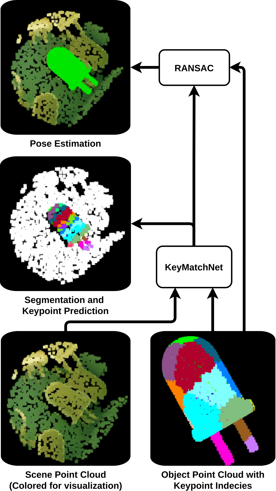

KeyMatchNet

Keymatchnet: Zero-shot pose estimation in 3d point clouds by generalized keypoint matching
To cite:
@article{hagelskjaer2023keymatchnet,
title={Keymatchnet: Zero-shot pose estimation in 3d point clouds by generalized keypoint matching},
author={Hagelskj{\ae}r, Frederik and Haugaard, Rasmus Laurvig},
journal={arXiv preprint arXiv:2303.16102},
year={2023}
}